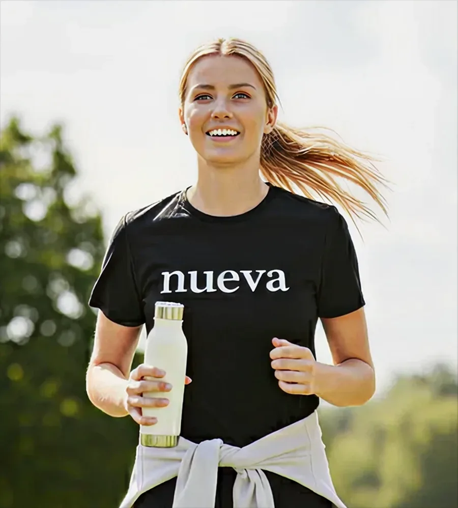
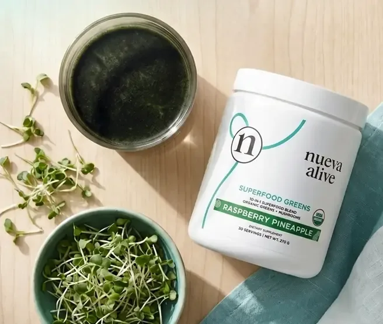
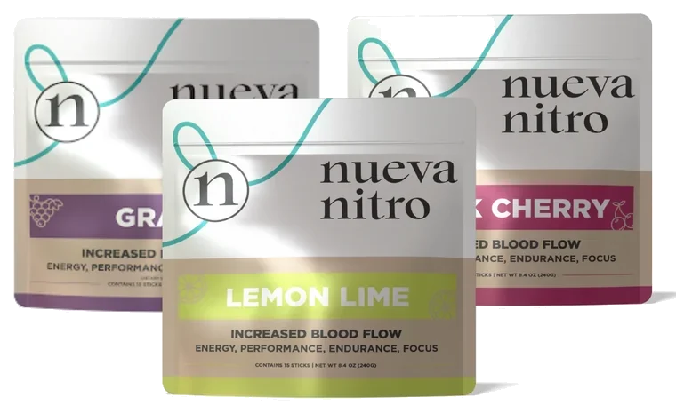
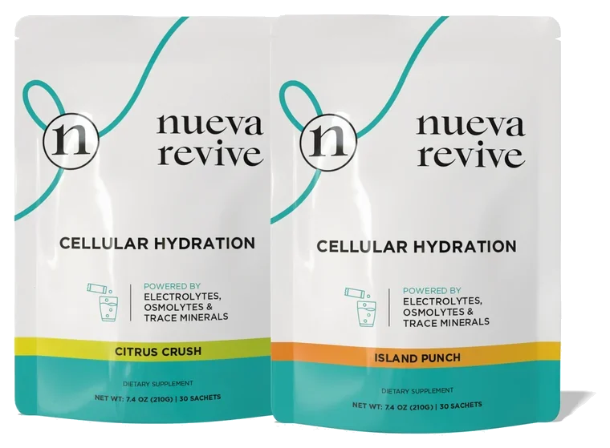
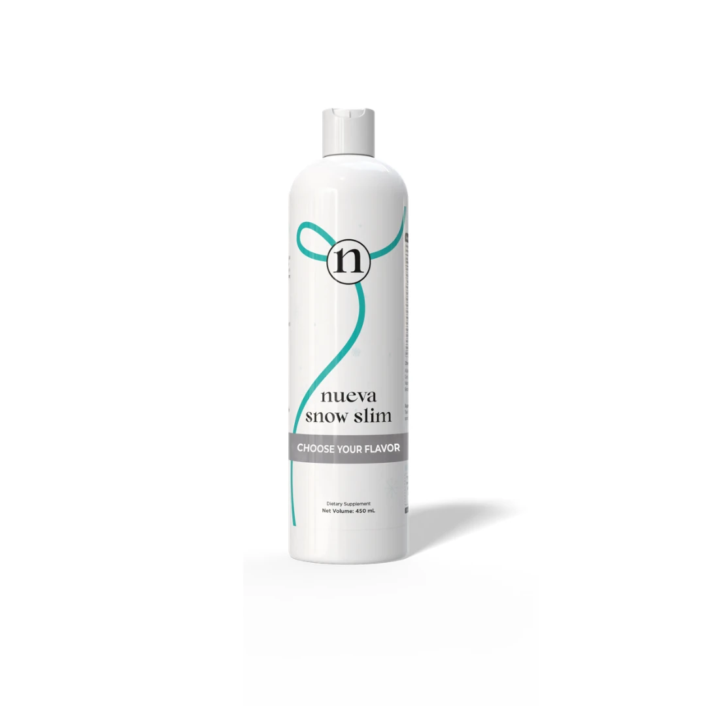
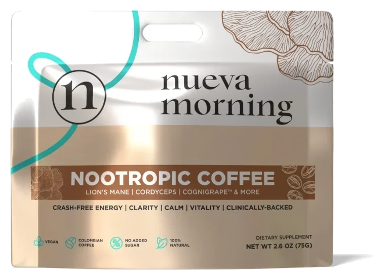
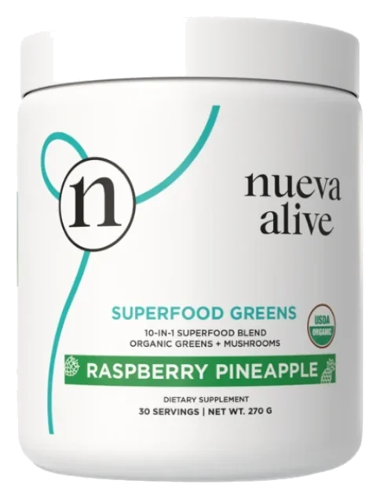
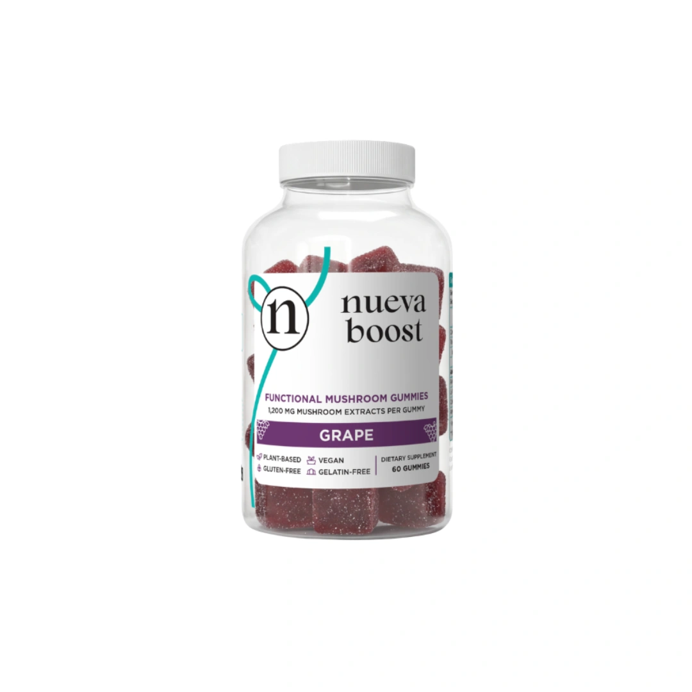

One range, made to combine
Start with one product and add as you go. They're built to be taken together.
Presented by {{custom_values.nueva_rep_full_name}}
Meet Nueva
Nueva makes daily wellness products that are built to be taken together. It also pays the people who share them, up to 40% on customer purchases.
Both sides are on this page, so you can see which one you're here for.

Most people end up with a cupboard of tubs from different companies that were never meant to sit together. Nueva's built the other way round: energy, hydration, greens, gut, focus and weight, made to be combined. More than 70,000 members have joined since it started.

Start with one product and add as you go. They're built to be taken together.
Produced in GMP certified facilities and tested by a third party lab.
A 30 day money back guarantee, and it stands even on an empty container.
Every product has a lower subscription price, so the habit costs less than the trial.
The range
Every line below comes off Nueva's own label. Read the panel before you order, especially if you avoid anything.

A sachet you mix and leave for five minutes. Built around L citrulline, green tea caffeine and a B complex.

A hydration sachet using their Aquivance five layer technology, with electrolytes, glycine and marine trace minerals.

One tablespoon of liquid a day, built around Morosil blood orange extract. Contains chicken collagen.

Coffee with lion's mane, cordyceps and L theanine, if you'd rather not add another drink to the day.

A greens blend with spirulina and prebiotics, for the vegetables most days don't include.

Gummies with lion's mane, cordyceps, ashwagandha and reishi, if capsules aren't your thing.
The other side
If you share Nueva, you're a Social Marketer. There's no storefront, no stock in a spare room and nothing to ship. You share your own link, and when someone buys through it you're credited. Nueva's published plan pays up to 40% on customer purchases.
{{custom_values.nueva_income_disclaimer}}
Two doors, and you're welcome through either.
These statements have not been evaluated by the Food and Drug Administration. These products are not intended to diagnose, treat, cure or prevent any disease.